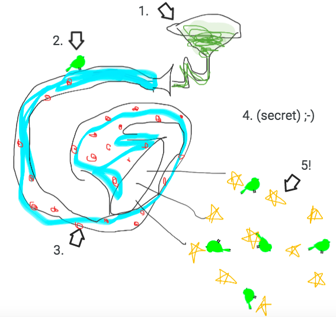

A slick puddle on the floor of a nightclub in Berlin (somewhere), reflecting the Light of Many Colors. Near a small village on the Sapphire Coast, a fisherman dips his hook into the water for the first time that morning, and in the gentle motion of the waves, he does not notice that no ripples emerge. A old tome on the top shelf of a study in an winemaker's estate in the Alto Maipo gathers another few particles of dust, bringing it nearer to the day (some 25 years later) when it will topple off, falling 11.4 meters to the ground (don't worry, nobody will even be in the room).
Wait - in the distance - what's that? The birth of a new style of electronic music? The cry of an alien bird? The shouts of the harvesters, taking a break from their labor to engage in an athletic contest or - no, surely not - a knife fight?
That was the moment we knew.
FronchFacts 1. The Fronch Horn is used by the peoples of Fronke to serenade the neighboring birds and signal the start of morning chores. 2. Over time the birds became dependent on the Fronch song to know when mating season began and ended, as different melodies are played at different times of year. It is illegal and punishable by fine if you play out of season. 3. More people are Fronch horn players than not in Fronke which means those who abstain from playing sometimes feel rather gauche. As a result they are known for getting their chores done early. 4. There are likely environmental externalities to the Fronch horn, but they haven’t been studied yet. Whenever a study is proposed or started, it always seems to peter out for lack of enthusiasm. The principle scientists inevitably find something else in their fieldwork more captivating and pivot the subject of study, or grant funding is held up too long and the graduate student graduates. 5. The girth of the Fronch horn is proportional to the length of the player’s left hand. Once a player lost their left hand, which sparked hearty debate about whether their Fronch horn should be infinite or infinitesimal. The debate was held up in the courts for several years, until technology improved and the player was able to acquire a convincing prosthetic, which it was agreed upon would be suitable for future measurements. The player however decided to move on to sharpshooting as a hobby instead. 6. The Fronch horn requires no hands to play.